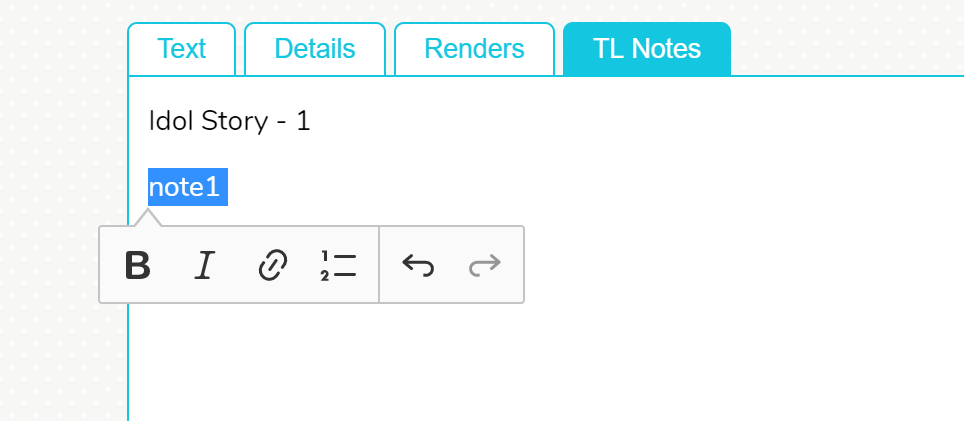
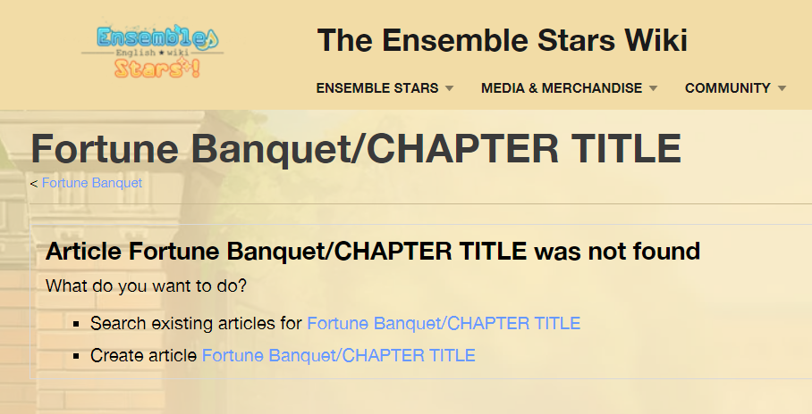
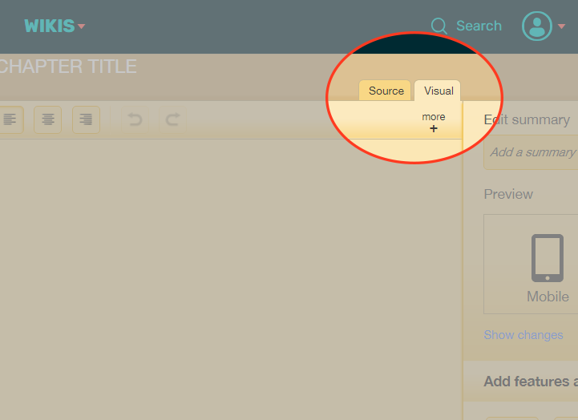
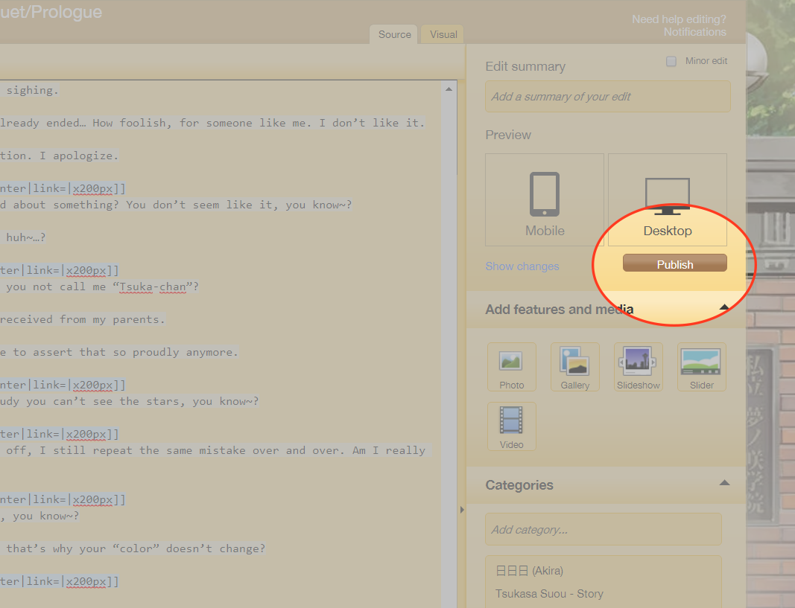

TEXT GUIDELINES
Text Tab
Copy and paste your translated chapter into the text box.
- Header images and other chapter images - You can include whole-row images such as a header image or CGs by inserting the EXACT file name (ex. (Resounding Beat) Jun Sazanami CG2.png) into the dialogue on its own line. To set the header image, make the image file name the first line in the dialogue.
- Headings for scene changes - You can indicate scene changes by including a line that starts with "Heading: " in the dialogue. I'm still working on a way to set the color of individual headings, so for now any mid-chapter headings will take the "Location" color in the Details tab.
- Bold and italic text - Bold and italic text are now supported, and should be preserved when pasted in from a Word/Google document.
- Links - Links should also be preserved when pasted in. For now, internal wiki links are not supported so make sure every link is like an external one (i.e. with the https:// in front).
Here's an example of a short dialogue:
The header image.png
Person A: This is a line said by Person A! Their line starts with their name followed by a colon.
Person B: This is a line said by another person!
Heading: Location: Hallway (will appear as "Location: Hallway" in story)
A screenshot of the game.jpeg
Person A: This is a third line from Person A.
When characters like Eichi have multiple lines at once, the following dialogue formats are accepted:
Person A: Line by person A
Second line by person A (line doesn't begin with name)
Person B: Line by person B
Person A: Line by person A
Person A: Second line by person A (line begins with name)
Person B: Line by person B
Details Tab
Fill in information about the chapter and its appearance on the wiki. INSERT DIAGRAM OF WHAT EACH COLOR IS
Renders Tab
The renders tab should automatically display which characters are in the dialogue, with a text box next to each name. Fill in the file names of the renders that should be used for each character. (ex. Tsukasa Suou School Dialogue Render.png)
For now, if you want to use more than one render per character in one chapter, you have to format each section of the chapter with different renders separately. INSERT EXAMPLE
TL Notes Tab
In the dialogue, you can mark the place the translation note refers to with a marker like this:
Izumi: I don’t know if they’re Eden or oden[1] or what, but we can’t let them have their way in our territory.
You can have markers in the middle or end of the line, or even multiple markers in one line if needed.
In the TL Notes tab, here's an example of how the notes should be formatted:
Chapter 1
- Place translator notes in a numbered list like this.
- Make sure the numbers correspond to each marker!
- The first line should be a chapter title that's UNIQUE within the story (needed for citations to work with the wiki's tab view)
- The TL notes should be in an actual numbered list as opposed to paragraphs/lines with numbers in front. You can use the editor to format the list:

CREATING A NEW PAGE ON THE WIKI
- Copy the text that shows up on the right-hand box (can be done with Ctrl+A/Cmd+A)
- Go to the cover page of the story and edit the URL to have the name
of the chapter.
For example, https://www.ensemble-stars.wikia.com/wiki/Checkmate/CHAPTER TITLE
-
Choose to create a new page.

-
Instead of the visual editor, switch to the source editor.

-
Paste in the formatted text, and publish the page.

- NOTE: As of now you must manually upload the header image of the
chapter in the visual editor unless you upload the header image to
the wiki before creating the new chapter page.